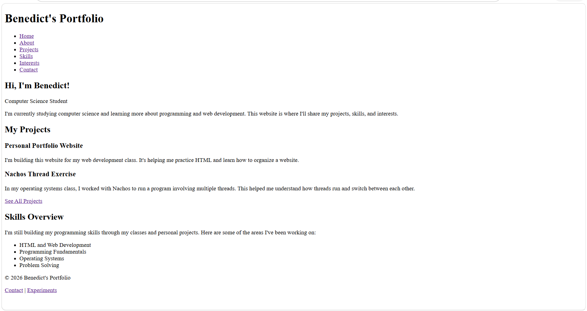

Personal Portfolio Website
I'm building this website for my web development
class. I've been learning how to use HTML and
organize different pages of a website.
Technologies used: HTML, VS Code, GitHub
Here's a screenshot of my portfolio homepage:

My process:
- Plan the website using wireframes.
- Build the pages using HTML.
- Test the pages and check for HTML errors.
Portfolio pages drafted: 7 out of 7
Nachos Thread Exercise
For my operating systems class, I worked with
Nachos to run multiple threads. This helped me
understand how threads execute and how the
operating system switches between them.
Technologies used: Nachos, Linux
Horror Sound Design Project
For a music class project, I worked on adding
sound effects to a short horror clip. I used
DaVinci Resolve to edit the audio and match
the sounds with what was happening in the video.
Tools used: DaVinci Resolve